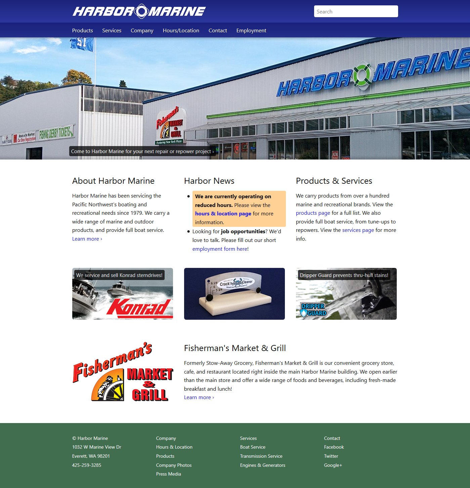
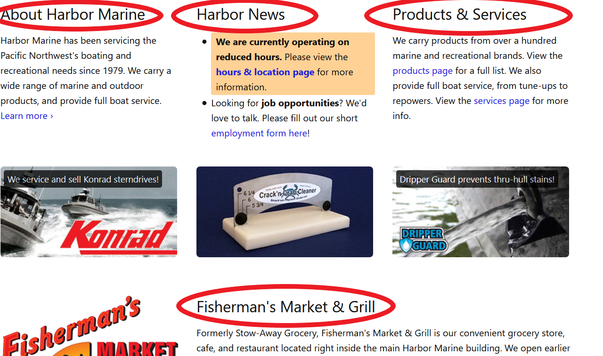

Introduction
This week we will be performing an analysis of a website for use of accessibility principles in its design. Accessibility of a website is the use of code to make the site usable by those with limitations, such as visual impairments or motor skills disabilities. Users such as these rely on assistive technologies such as screen readers or software that summarizes a page's content making it easire to navigate without use of a mouse. The site we will be review today is harbormarine.net. Harbor Marine is a brick and mortar business specializing in boating supplies, boat repair and other expert marine services. They do not have an e-commerce business so the site serves primarily as an informational online brochure.
In performing this analysis, we will use an online web accessibility evaluation tool which will highlight any accessibility issues that may exist. The tool can be found here
Assessment
First Impressions
Upon viewing the home page, we see color contrasts, white space between segments and relevant content grouped together. Additionally, when zooming with the browser up to 200% size, text does not wrap or disappear and the site renders normally. At first glance the site incorporates some basic accessibility principles for the visually impaired. Screenshot below:

harbormarine.net home page
Using WAVE to evaluate the code
I used WAVE for a more detailed analysis of habormarine.net. Wave identified several issues:
Issue 1: Use of H1 tags multiple times
The site's code makes use of the H1 tag for items beyond just the sites title. The screenshot below circles in red which elements are h1 tags:
multiple instances of h1 tags
For accessibility purposes, H1 tags should only be used for the site's title. The reason for this is certain assistive technologies rely on html tags to break a site down into a structured list allowing a user to navigate the site by tabbing through the list. These technologies determine the hierarchy of content based on tags, with H1 being at the very top. With multiple h1 tags, such technology would break this single page down into multiple structured lists which is not necessary given the content.
Issue 2: Alt text for hyperlink images does not describe it as such
harbormarine.net Makes use of several images as links. The alt-text for these images only describe what the image is, but do not describe it as a link to another page. A user relying on a screen reader would not be able to detect the existence of a link and may not be able to easily navigate to the linked page otherwise.
Issue 3: Use of same alt-text in two locations
In examining the alt-text for two home page images, we find that the same alt-text description is used in two locations for two different images. This is actually an error on behalf of the web dev as the images are completely unrelated. Its likely code from copied from the previous image and the alt-text not updated. In any case, it presents an accessibility failing for those using a screen reader who would be left to assume that the site makes use of the same image twice
Summary
Generally speaking, the site does well and has a few items to clean up.
- First, change the multitude of h1 tags to h2 to make the site digestible for assistive technologie
- Second, fix alt-text issues present so screen readres can correctly describe the image and its use as a link.